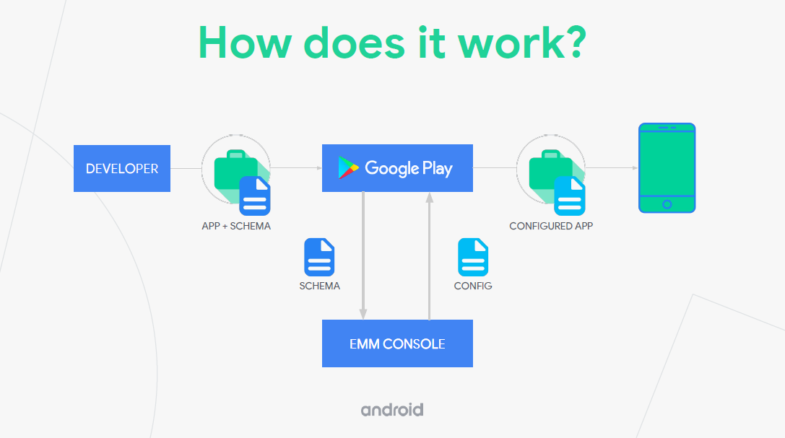

Managed configurations
Managed configurations is Android’s implementation of AppConfig and OEMConfig, which were designed by a community of MDM and ISV providers to simplify the remote configuration of apps on mobile devices.
How it works
Managed configurations provide an interface for IT admins to configure app settings from their MDM console.

Here is the flow of events:
- App developers add support for managed configurations to their apps. They define which app settings can be remotely configured by using an XML schema file, and program their app to deploy any remote settings. Once developers deploy managed configurations, they push their app to Managed Google Play.
- MDM developers update their web consoles to pull an app’s XML schema from the app on Managed Google Play.
- Enterprise IT admins use MDM web consoles to remotely configure app settings on enterprise devices. After the IT admin saves their configuration, the MDM console pushes the configuration to Managed Google Play.
- Managed Google Play updates the app on all applicable enterprise devices to reflect the new configuration.
Why use managed configurations?
There are several compelling benefits:
-
Rapid deployment — MDM providers can roll out new app features as soon as third-party app developers push their latest apps to Google Play. Enterprises can start using new features immediately.
-
Minimal development — Traditionally, the burden is on MDM developers to deploy new third-party app features, through SDKs like the Knox SDK. These SDKs are powerful but at the same time complex and proprietary. With managed configurations, the third-party app developers take care of deploying new features.
-
Scalability — Once MDM providers set up support for managed configurations, they can support any current and future app that follows the AppConfig and OEMConfig standards.
We realize that not all MDM solution providers have the time or resources to customize the deployment of new features on all the apps and devices they need to support. For this reason, we support managed configurations. However, we continue to offer Knox SDK APIs to all of our partners who want to build fully customized and differentiated user experiences.
What are AppConfig and OEMConfig?
Some features of AppConfig:
- It is an app configuration standard developed by the AppConfig community.
- It allows you to remotely push configurations to apps.
- You can configure apps like Samsung Email and Google Gmail.
- You can configure features that are also provided in the Knox SDK, for example, email settings.
Some features of OEMConfig:
-
Designed for manufacturers like Samsung to support remote configuration of features on their devices.
-
Samsung’s implementation of OEMConfig is called the Knox Service Plugin.
-
You can configure many features that are in the Knox SDK. For the latest features, see the Knox Service Plugin release notes.
-
More complex than AppConfig:
-
It has up to four levels of schema settings, to configure, for example, advanced VPN settings.
-
The results of the device configuration are sent back to UEM console through a feedback channel.
-
For more info, see also Set up managed configurations.
Ready to integrate managed configurations?
See Deploy managed configurations, then review app-specific instructions for the Knox Service Plugin and Samsung Email.
Is this page helpful?